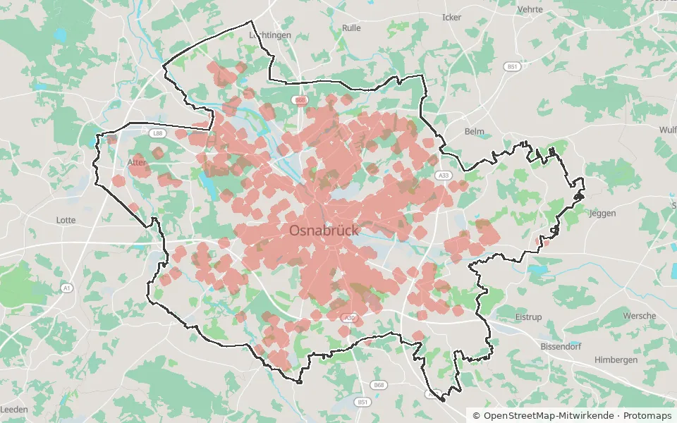
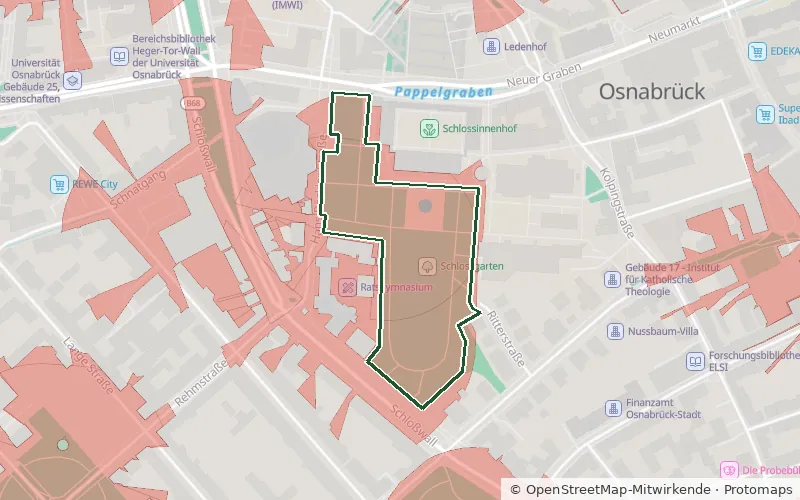
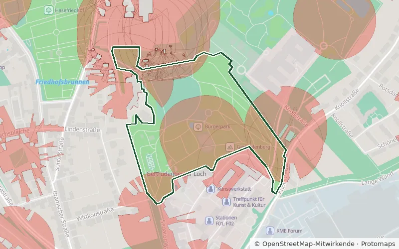
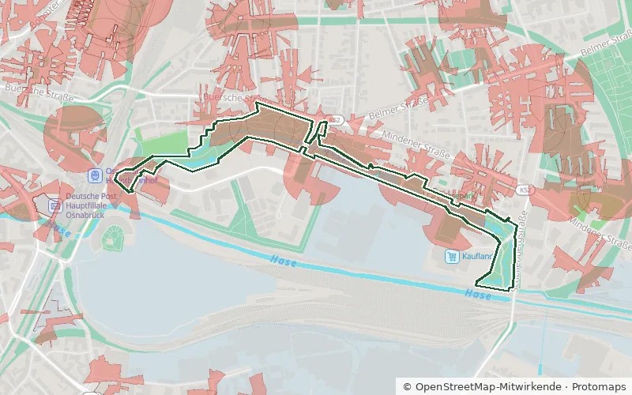
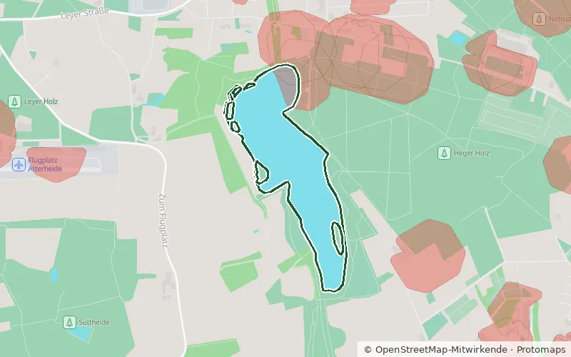
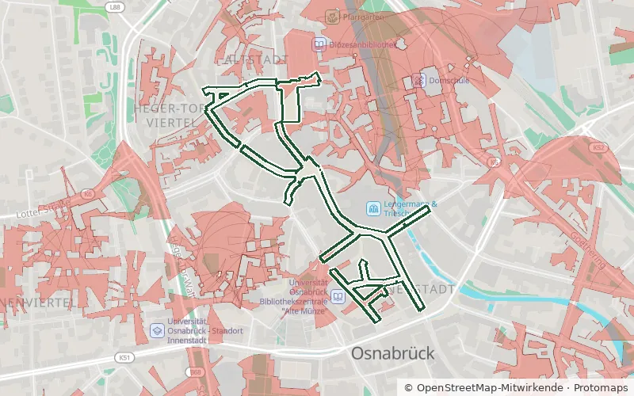
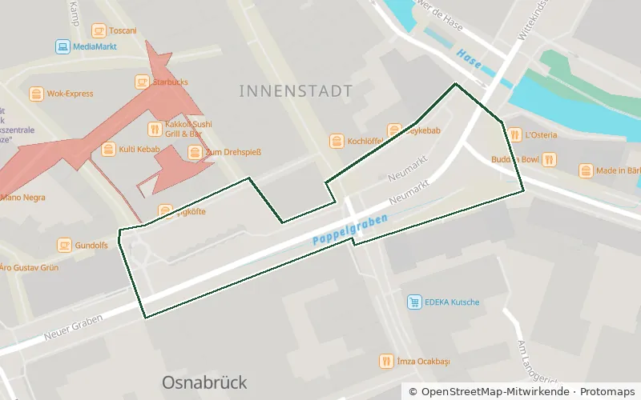

In Osnabrück ist öffentliches Kiffen auf 16 km² verboten, das sind 13,3 % der Stadtfläche von 120 km². Grund sind 850 Einrichtungen wie Schulen und Spielplätze: In ihrer Sichtweite, bis 100 Meter vom Eingang und ohne Gebäude dazwischen, verbietet § 5 KCanG den Konsum. Dazu kommen die Fußgängerzonen von 7 bis 20 Uhr und überall die Gegenwart von Minderjährigen.
Ein Fünftel der Stadt ist Wald (21 % der Stadtfläche), und davon liegen nur 7,9 % in einer Zone; ohne den Wald gerechnet sind es 14,8 %.

Woher die Zonen kommen
| Einrichtung | Anzahl | Zonenfläche |
|---|---|---|
| Schulen | 97 | 3,8 km² |
| Kitas und Kindergärten | 87 | 2,3 km² |
| Kindertagespflege | 6 | 0,1 km² |
| Spielplätze | 264 | 6,0 km² |
| Kinder- und Jugendeinrichtungen | 21 | 0,6 km² |
| Sportstätten | 375 | 7,7 km² |
Jede Art für sich gezählt, Überlappungen also mehrfach. Anbauvereinigungen nur, soweit in OpenStreetMap eingetragen.
Die meisten Zonen gehen auf die 375 Sportstätten zurück, danach auf die 264 Spielplätze. Auf Sand- und Gerätespielplätzen verbietet die Grünflächensatzung außerdem Alkohol, Rauchen „sowie den Konsum von Drogen aller Art“, bis zu 5.000 Euro (Grünflächensatzung). Die Pausenhöfe städtischer Schulen sind nachmittags als Spielplätze offen (Ordnung).
Schlossgarten, Parks und Wald
Der Schlossgarten hinter dem Schloss liegt ganz in einer Zone (100 %); im Garten liegt ein Spielplatz. Im Bürgerpark sind es 68 %, wegen eines Spielplatzes im Park und 16 Sportanlagen am Rand, im Hasepark 66 %, mit zwei Spielplätzen und einem Pumptrack.



Am Rubbenbruchsee liegen 5 % der Wasserfläche in einer Zone, im Heger Holz 18 %. Auf einem 100 Meter breiten Streifen Land entlang der Flüsse sind es 17 %. Am Schölerberg, wo der Zoo liegt, sind es 48 %, am Attersee 22 % der Wasserfläche. Der Herrenteichswall liegt fast ganz in einer Zone (89 %), der TERRA.park zu 77 %.

Innenstadt
Die beste Liste der Fußgängerzonen steht in der Sondernutzungsgebührenordnung: Große Straße, Krahnstraße, Nikolaiort, Domhof, Theatervorplatz, Georgstraße, Jürgensort, Markt und Kamp-Promenade, dazu „alle anderen Fußgängerzonen“ ohne Namen (Gebührenordnung). Die Johannisstraße steht dort nicht. In den Fußgängerzonen gilt von 7 bis 20 Uhr Konsumverbot; blau sind die Fußgängerbereiche aus OpenStreetMap.
Von der Großen Straße liegen außerdem 16 % in einer Sichtweiten-Zone, vom Markt 3 %. Neumarkt (0 %) und Johannisstraße (2 %) liegen fast ganz außerhalb; dort, in der südlichen Innenstadt, verbietet die Stadt rund um die Uhr Alkohol und Waffen, Cannabis nicht (Alkoholverordnung).


Für die Maiwoche gibt es kein eigenes Cannabisverbot. Die Stadt rät, auf dem Familienfest ganz darauf zu verzichten, und nennt den Herrenteichswall wegen der nahen Schulen als Verbotsbereich (HASEPOST, Mai 2024); dort liegen 89 % in einer Zone.
Hochschulen
Hochschulen sind nach § 5 KCanG keine Verbotsorte. Die Hochschule Osnabrück verbietet aber auf allen ihren Flächen, auch draußen, den „Konsum psychoaktiver Drogen jeder Art“ (Campus- und Hausordnung). Vom Campus Westerberg, den sie mit der Universität teilt, liegen 14 % in einer Zone.
Was sonst noch gilt
Ein Verstoß gegen § 5 Abs. 2 kostet in Niedersachsen 20 bis 500 Euro, in Gegenwart von Minderjährigen 20 bis 1.000 Euro (Bußgeldkatalog Niedersachsen); zuständig ist die Stadt. Eigene Verbotszonen für Cannabis hat Osnabrück nicht (Stand 27. November 2026).
Häufige Fragen
Wo darf man in Osnabrück kiffen?
Nach § 5 KCanG außerhalb der roten Flächen, etwa im Heger Holz (18 % in einer Zone). Nicht auf Spielplätzen und auf dem Gelände der Hochschule, tagsüber nicht in den Fußgängerzonen, nie in Gegenwart von Minderjährigen. Weiß heißt nicht sicher erlaubt: Hecken, Bäume und fehlende Einrichtungen kennt die Karte nicht.
Wie genau ist das?
Täglich aus OpenStreetMap gerechnet, mit Gebäuden als Sichthindernis; die Zahlen hier sind vom 27. November 2026. Eine Orientierungshilfe, keine Rechtsauskunft (wie gerechnet wird).
Fehlt eine Einrichtung? Korrekturen in OpenStreetMap stehen am Tag darauf auf der Karte; bitte nur eintragen, was es vor Ort gibt.